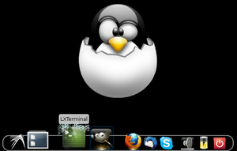
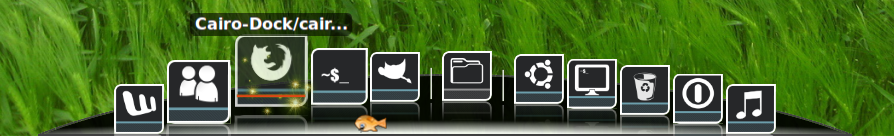
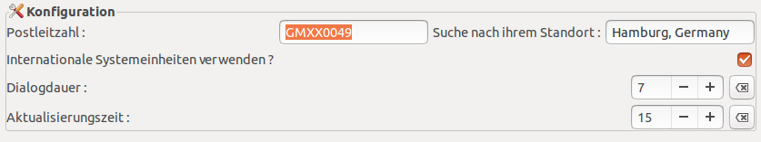

Glx-Dock
Dieser Artikel wurde für die folgenden Ubuntu-Versionen getestet:
Ubuntu 14.04 Trusty Tahr
Zum Verständnis dieses Artikels sind folgende Seiten hilfreich:
Glx-Dock  (früher Cairo-Dock) ist ein grafisch sehr ansprechendes Dock für GNOME oder Xfce, ähnlich dem Avant Window Navigator, Docky oder dem Dock von Mac OS X. Es kann Schnellstart-Icons (Launchers), Minianwendungen (Applets) und die laufenden Programme (Tasks/Applications) beherbergen.
(früher Cairo-Dock) ist ein grafisch sehr ansprechendes Dock für GNOME oder Xfce, ähnlich dem Avant Window Navigator, Docky oder dem Dock von Mac OS X. Es kann Schnellstart-Icons (Launchers), Minianwendungen (Applets) und die laufenden Programme (Tasks/Applications) beherbergen.
Das Besondere ist, dass Applets und Launcher vom Dock losgelöst werden können und ähnlich wie bei Plasma von KDE als Widgets auf dem Desktop verwendet werden können. Starter können in Unterdocks zusammengefasst werden, um Platz zu sparen. Das "Design und Effekt"-Spektrum des Glx-Docks reicht von simpel, über elegant und praktisch bis bunt, unterhaltsam und überladen und kann daher die Anforderungen und Wünsche der meisten Anwender erfüllen.
Am schönsten sieht das Glx-Dock mit einem Composite-Manager wie z.B. Compiz aus, damit die zahlreichen Effekte zur Geltung kommen. Hierzu kommt OpenGL zum Einsatz. Ab Version 2.0 kann man Glx-Dock ohne OpenGL direkt aus dem Menu starten.
Hinweis:
Aufgrund der Umbenennung des Projekts werden in diesem Artikel der alte (Cairo-Dock) und der neue Programmname (Glx-Dock) synonym verwendet.

Installation¶
Cairo-Dock lässt sich aus den Paketquellen installieren [1]:
cairo-dock (universe)
 mit apturl
mit apturl
Paketliste zum Kopieren:
sudo apt-get install cairo-dock
sudo aptitude install cairo-dock
PPA¶
Hinweis:
Eine bereits aus den offiziellen Paketquellen installierte Version sollte vor der Nutzung des PPAs unbedingt entfernt werden.
Die Entwickler stellen die aktuelle stabile Version zur Verfügung [2].
Adresszeile zum Hinzufügen des PPAs:
ppa:cairo-dock-team/ppa
Hinweis!
Zusätzliche Fremdquellen können das System gefährden.
Ein PPA unterstützt nicht zwangsläufig alle Ubuntu-Versionen. Weitere Informationen sind der  PPA-Beschreibung des Eigentümers/Teams cairo-dock-team zu entnehmen.
PPA-Beschreibung des Eigentümers/Teams cairo-dock-team zu entnehmen.
Damit Pakete aus dem PPA genutzt werden können, müssen die Paketquellen neu eingelesen werden.
Die Installation erfolgt dann wie oben abgegeben.
Verwendung¶
Nach der Installation kann das Programm bei Ubuntu-Varianten mit einem Anwendungsmenü über "Zubehör -> Cairo-Dock" gestartet werden. Wenn man keinen 3D-Treiber hat, kann man das Dock ohne OpenGL starten, um Darstellungsfehler zu vermeiden. Um das Dock automatisch beim Anmelden starten zu lassen, kann man es in den Autostart legen [3].
Unity¶
Hier gibt es bei Aufruf über die Dash zwei Möglichkeiten:
Cairo-Dock (no OpenGL)
Cairo-Dock (mit OpenGL)
Bei Verwendung mit OpenGL kann es zum Konflikt mit Compiz kommen, während die Benutzung ohne OpenGL problemlos funktioniert.
Einstellungen¶
Die Konfiguration des Cairo-Docks wird über " -> Cairo-Dock -> Konfigurieren" vorgenommen.
-> Cairo-Dock -> Konfigurieren" vorgenommen.
Designs¶
Zunächst kann man sich ein Design auswählen. Das Design kann das Aussehen des Docks, der Icons, der Effekte und die angezeigten Launcher und Applets bestimmen. Man öffnet das Konfigurationsmenü durch auf das Dock und wählt "Cairo-Dock > Themen verwalten" . Nun kann man sich aus einer Nachschlageliste einige Designs auswählen. Designs lassen sich auch manuell nachinstallieren. Wählt man ein neues Design, kann man auch die angezeigten Launcher und das Verhalten der Symbole des alten Themas behalten. Dazu müssen die Optionen "Use the new theme's launchers?" und "Use the new theme's behaviour?" abgewählt werden.
Starter und Unterdocks¶
Um dem Dock neue "Starter" zu spendieren, kann man diese per Drag'n'Drop (Ziehen und Ablegen mit  ) z.B. aus dem GNOME-Menü hinzufügen. Für die bessere Übersicht kann man Starter auch in Unterdocks organisieren. Diese Subdocks können sich auf eine andere Art und Weise ("View") auffalten als das Hauptdock.
Unter KDE hat man das Problem, dass man Symbole vom Hintergrund nicht per Drag'n'Drop hinzufügen kann. Hierbei hilft es, wenn man beim Dock auf "Applikationsmenü" klickt, sich dort das entsprechende Symbol sucht und von hier aus per Drag'n'Drop das Symbol in das Dock einfügt.
) z.B. aus dem GNOME-Menü hinzufügen. Für die bessere Übersicht kann man Starter auch in Unterdocks organisieren. Diese Subdocks können sich auf eine andere Art und Weise ("View") auffalten als das Hauptdock.
Unter KDE hat man das Problem, dass man Symbole vom Hintergrund nicht per Drag'n'Drop hinzufügen kann. Hierbei hilft es, wenn man beim Dock auf "Applikationsmenü" klickt, sich dort das entsprechende Symbol sucht und von hier aus per Drag'n'Drop das Symbol in das Dock einfügt.
Applets¶
Zahlreiche Applets bereichern das Cairo-Dock. Hier eine Auswahl:
showDesktop - Desktop anzeigen
QuickBrowser - Persönlichen Ordner als Menü anzeigen
GMenu - GNOME Menüs Anwendungen und System
Shortcuts - Persönliche Lesezeichen anzeigen
switcher - Zwischen Desktops hin- und herschalten
logout - Rechner ausschalten, neustarten, etc.
musicPlayer - Mediaplayer über Dock steuern
cpusage/ram-meter/PowerManager/nVidia/netspeed - Verschiedene Systeminformationen
clock - Analoge Uhr
weather - Wetteranzeige
dustbin - Papierkorb
TomBoy - TomBoy-Notizen
Teilweise kann man die Applets mit anderen Symbolen belegen, damit sie besser zur Desktop-Umgebung passen. Applets können aus dem Dock ausgegliedert und auf dem Desktop abgelegt werden, ähnlich wie Desklets. Das geht mit und "Zurück an das Dock binden".
Erscheinungen und Effekte¶
Views sind die verschiedenen Ansichten (OSX-ähnlich, kreisend, auffaltend, etc.) der Docks und Subdocks. Es gibt eine Vielzahl von Effekten für das Dock und die darin enthaltenen Symbole. Die Palette reicht von Feuer, Wasser, Sturm über kreisende Würfel zu schwarzen Löchern. Ähnlich wie bei den zusätzlichen Desktop-Effekten per Compiz Fusion kann man nach persönlichem Belieben das Dock also sehr simpel halten oder überfrachten.

Problembehebung¶
Icons werden nach Ruhezustand nicht (korrekt) angezeigt¶
Wenn nach dem Start aus dem Ruhezustand die Icons des Cairo-Docks nicht (korrekt) angezeigt werden, kann folgendes Python-Programm den Fehler beheben: https://bazaar.launchpad.net/~cairo-dock-team/cairo-dock-core/scripts/view/head:/refresh_cd_on_resuming.py .
Script herunterladen
Script starten mit:
python /PFAD/ZU/refresh_cd_on_resuming.py
Betriebssystem in den Ruhezustand versetzen und wieder starten.
Wenn alles funktioniert, wie es soll, kann der Befehl zum Ausführen des Skripts der Datei /etc/rc.local hinzugefügt werden. Dadurch wird das Skript bei jedem Systemstart automatisch ausgeführt.
Fehlende Transparenz¶
Wenn nach der Installation oder beim Wechsel auf ein neues Design keine Transparenz mehr vorhanden ist, kann man im Konfigurationsmenü die sogenannte Fake-Transparenz aktivieren. Das geht über -> "Cairo-Dock -> Konfigurieren -> Erweiterter Modus -> Verhalten -> System -> Zusammensetzung -> Compositing mit falscher Transparenz aktivieren?". Danach das Dock schließen und neu starten.
Serverprobleme¶
Der Server ist nach www.glx-dock.org umgezogen, http://www.cairo-dock.org/ ist nicht mehr zu erreichen. Daher können unter Umständen keine Erweiterungen oder Designs mehr bei dem aus den offiziellen Paketquellen installierten Programm geladen werden.
Um einen Alternativserver zu verwenden, bietet sich die Option -S an. Nachfolgend ist der Aufruf aufgeführt, der den Ersatzserver verwendet:
cairo-dock -S http://themes.glx-dock.org
Die Einstellung gilt nur für eine Sitzung, sodass nur in dieser Designs heruntergeladen werden können. Deshalb sollte man den Server baldmöglichst entsprechend anpassen.
Falsche Icons nach Design-Wechsel¶
Wenn nach einem Wechsel des Designs manche Icons noch wie im alten Design angezeigt werden, muss man Cairo-Dock beenden, den Ordner ~/.config/cairo-dock/ löschen und Cairo-Dock neu starten, um zu einem sauberen Standard-Design zu gelangen.
Wetter-Addon zeigt falschen Ort an¶
Bei der Konfiguration des Wetteraddons wird man aufgefordert die PLZ des Ortes einzutragen, von dem man die Wetter-Informationen abrufen will. Hier wird aber nicht nach der wirklichen PLZ gefragt, sondern nach dem Location Code. Diesen kann man von dieser Seite erhalten. Der Code fängt für Deutschland mit GMX... an.

 Programmübersicht
Programmübersicht- Erstellt mit Inyoka
-
 2004 – 2017 ubuntuusers.de • Einige Rechte vorbehalten
2004 – 2017 ubuntuusers.de • Einige Rechte vorbehalten
Lizenz • Kontakt • Datenschutz • Impressum • Serverstatus -
Serverhousing gespendet von